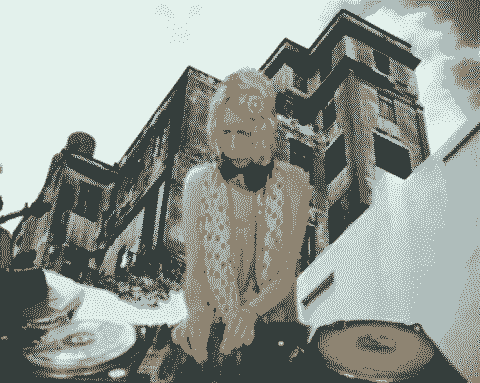
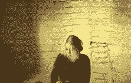

Your browser does not support the audio element.
Your browser does not support the audio element.
this is a tribute page to abelle
ARMA17 MIXES
This mix is everything i want out of a minimal mix. long mixes, weird textures, hypnotic melodies, skillful DJ, 240p video, the prime time for minimal house in russia and in the states. I could listen to this all day long, i cant wait to have a studio and blast this out of my speaker system. I want to build a speaker stack just to hear this set in its highest fidelity. This inspires me to make minimal house music with my euroradk modular, the way it was done in 2006-2012 era. I have been (nov 16 2024) super obsessed with ricardo villalobs for the past year and a half now. It makes sense, im really into weird textural modular music, and house and techno, and hes the perfect marrige of the two. I couldnt beleive i hadnt heard of him sooner, im so glad he brought me into this world. what crazy music!
abelle :heart eyes: <3 <3 <3
You are now listening to: Arma17: Abelle - RTS.FM.080711 July 25 2013
Microhouse is a genre rooted in minimal techno, bitpop, and house music. Emerging in the early 1990s, its foundations were influenced by the experimental glitch work of German artist Oval in 1993. The genre blends "housey minimal techno" with elements of funky, groovy house, bitpop, and the repetitive structures of techno, emphasizing cushiony kick drums, hi-hats, and faint synthetic textures. Key artists like Jan Jelinek (as Farben), Luomo (with the influential Vocalcity album), and labels such as Playhouse, Kompakt, Perlon, and Force Tracks played pivotal roles in popularizing the genre during the late 1990s and early 2000s. Microhouse continues to thrive, with artists like Jon Hopkins, Pantha du Prince, Four Tet, and others contributing to its evolution.

